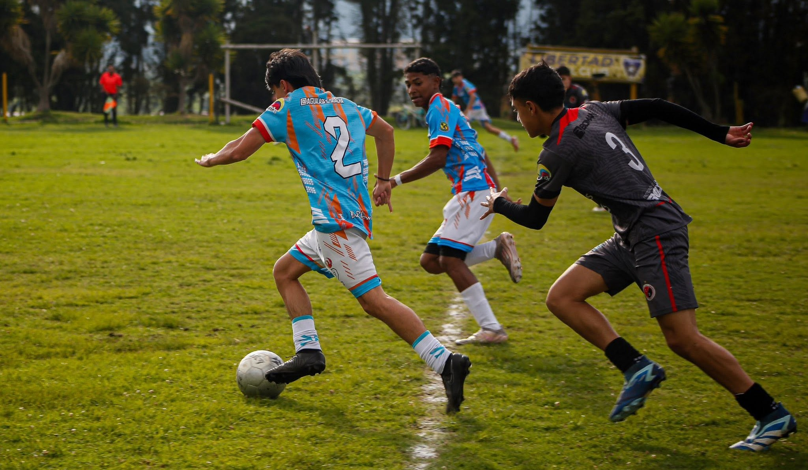
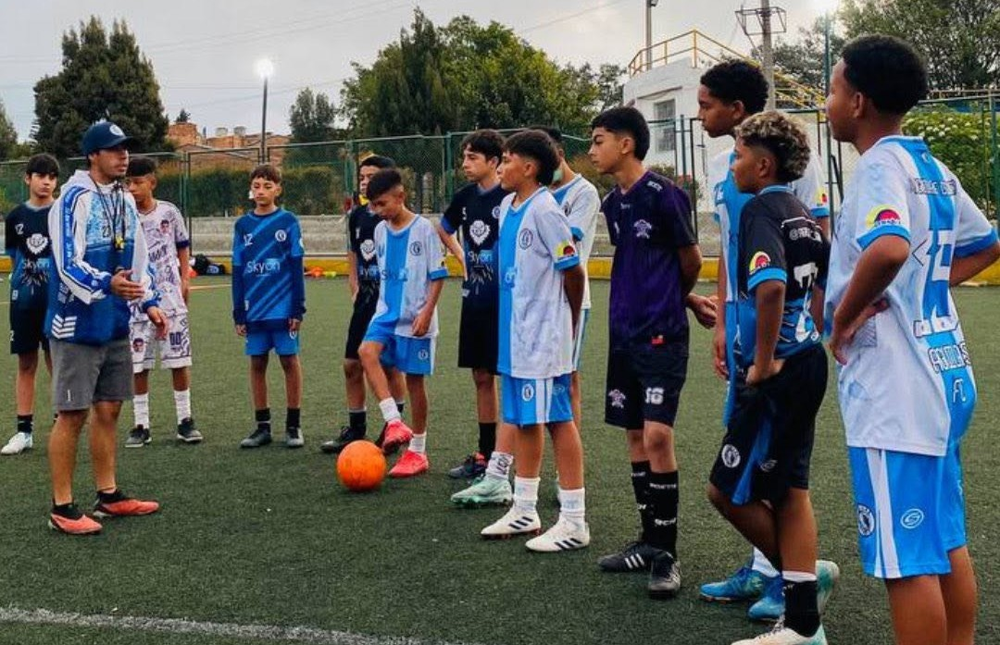
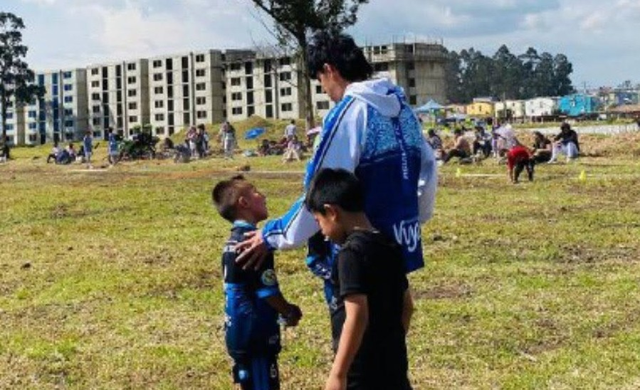
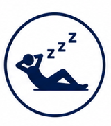
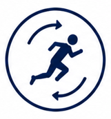
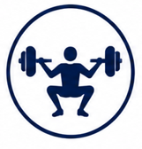
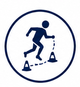
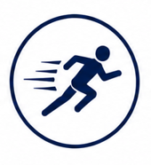
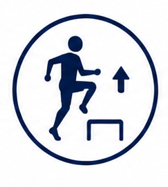

La periodización táctica es una metodología basada en el modelo de juego del equipo, que integra los diferentes componentes de la preparación deportiva. Su objetivo es desarrollar los principios y subprincipios que el equipo pretende aplicar en el campo de juego, mediante una planificación organizada del entrenamiento.

Formamos futbolistas íntegros, disciplinados y competitivos, fortaleciendo su desarrollo técnico, táctico, físico y mental. Además, promovemos habilidades para la vida, valores institucionales, trabajo en equipo y una mentalidad orientada al aprendizaje y al alto rendimiento.

Cada jugador cuenta con un seguimiento individual durante su proceso de formación. El club mantiene una hoja de vida deportiva digital y, por cada categoría, registra planeaciones, asistencias, calendario de competiciones, informes de partidos e informes mensuales. Además, los entrenadores presentan periódicamente los resultados del trabajo realizado, garantizando un seguimiento continuo del proceso formativo.


Recuperación pasiva

Recuperación activa

Adquisición de fuerza

Adquisición de habilidad

Trabajos de velocidad

Activación
Partido